دکتر مسعود گوهری منش
دانشیار گروه مهندسی مکانیک — دانشگاه تربت حیدریه
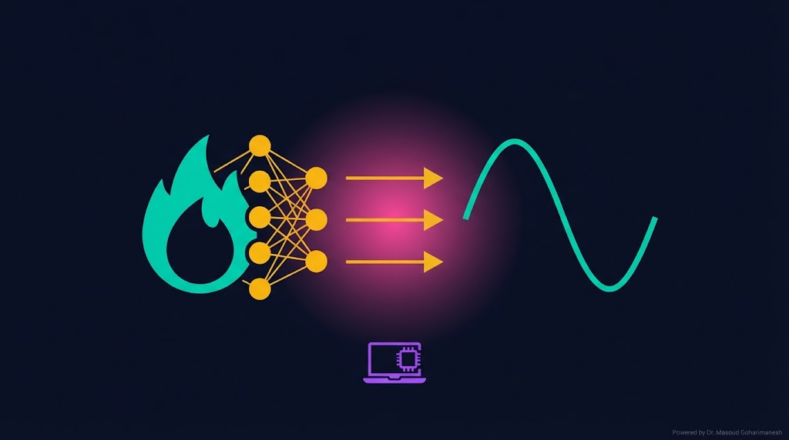
(PINN Implementation in PyTorch) — جلسه ۲۰
دکتر مسعود گوهری منش
دانشیار گروه مهندسی مکانیک — دانشگاه تربت حیدریه
امروز آخرین جلسه فاز ۵ است. با یادگیری PINN، شما تمام ابزارهای لازم برای پروژه پایانی را در اختیار دارید. در فاز ۶، این ابزارها را با بهینهسازی و نگارش مقاله IEEE تکمیل میکنیم.
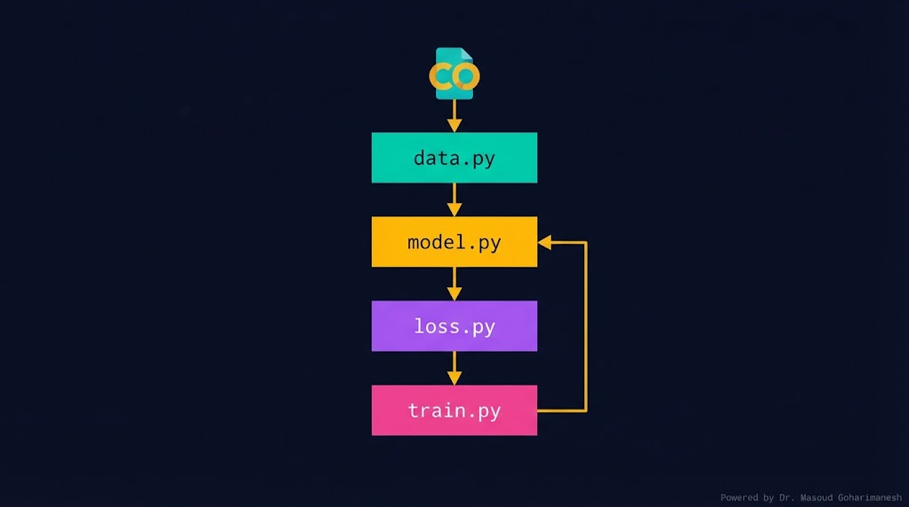
تنظیمات: ابعاد شبکه، نرخ یادگیری، وزن Lossها
کلاس PINN: شبکه عصبی چندلایه
سه Loss: PDE، Data، BC + ترکیب
تولید نقاط collocation، BC، داده
حلقه آموزش و ارزیابی
رسم، ذخیره مدل، مقایسه با FD
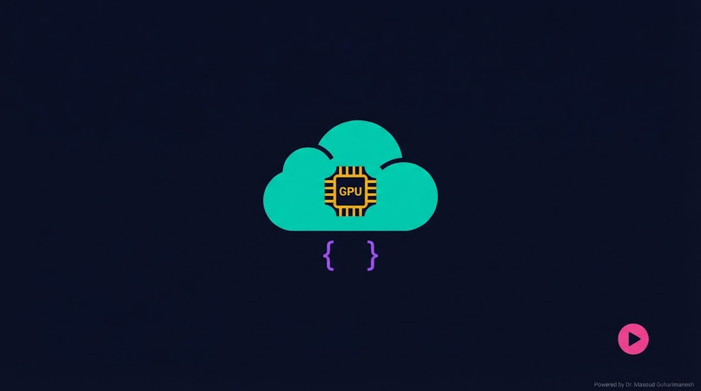
ابتدا در Colab، GPU را فعال کنید: Runtime → Change runtime type → GPU (T4)
# ============================================ # Cell 1: Setup & Imports # ============================================ import torch import torch.nn as nn import torch.optim as optim import numpy as np import matplotlib.pyplot as plt import time # --- تنظیمات کلی --- device = torch.device('cuda' if torch.cuda.is_available() else 'cpu') print(f'Using device: {device}') print(f'PyTorch version: {torch.__version__}') # --- Seed --- torch.manual_seed(42) np.random.seed(42) # --- Config --- class Config: # Network n_input = 2 # x, t n_hidden = 64 n_layers = 4 n_output = 1 # u(x,t) # Training n_collocation = 5000 n_boundary = 200 n_initial = 200 n_data = 100 # Optimizer lr = 1e-3 epochs = 10000 # Loss weights w_pde = 1.0 w_bc = 10.0 w_ic = 10.0 w_data = 1.0 # Physics alpha = 0.01 # thermal diffusivity cfg = Config() print(f'Config: {cfg.n_hidden} hidden × {cfg.n_layers} layers')
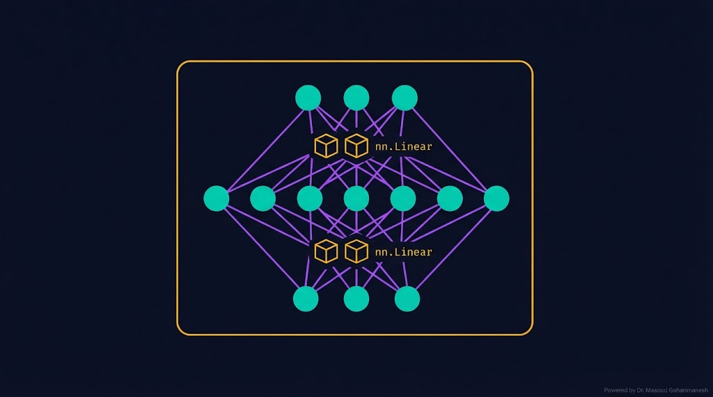
# ============================================ # Cell 2: PINN Network Definition # ============================================ class PINN(nn.Module): def __init__(self, cfg): super().__init__() self.cfg = cfg # ساخت لایهها layers = [] layers.append(nn.Linear(cfg.n_input, cfg.n_hidden)) layers.append(nn.Tanh()) for _ in range(cfg.n_layers - 1): layers.append(nn.Linear(cfg.n_hidden, cfg.n_hidden)) layers.append(nn.Tanh()) layers.append(nn.Linear(cfg.n_hidden, cfg.n_output)) self.net = nn.Sequential(*layers) # پارامتر قابل یادگیری (برای inverse problem) self.alpha = nn.Parameter(torch.tensor([cfg.alpha])) # مقداردهی اولیه Xavier self.apply(self._init_weights) def _init_weights(self, m): if isinstance(m, nn.Linear): nn.init.xavier_normal_(m.weight) nn.init.zeros_(m.bias) def forward(self, x, t): # ورودی: (N, 1) + (N, 1) → (N, 2) inp = torch.cat([x, t], dim=1) return self.net(inp) # --- تست سریع --- model = PINN(cfg).to(device) x_test = torch.rand(5, 1).to(device) t_test = torch.rand(5, 1).to(device) y_test = model(x_test, t_test) print(f'Output shape: {y_test.shape}') # (5, 1) print(f'Parameters: {sum(p.numel() for p in model.parameters())}')

# ============================================ # Cell 3: Data Generation # ============================================ # --- 1) Collocation Points (داخل دامنه) --- x_colloc = torch.rand(cfg.n_collocation, 1, requires_grad=True).to(device) t_colloc = torch.rand(cfg.n_collocation, 1, requires_grad=True).to(device) # --- 2) Boundary Points (x=0 و x=1) --- t_bc = torch.rand(cfg.n_boundary, 1).to(device) x_bc_left = torch.zeros(cfg.n_boundary, 1).to(device) x_bc_right = torch.ones(cfg.n_boundary, 1).to(device) # --- 3) Initial Points (t=0) --- x_ic = torch.rand(cfg.n_initial, 1).to(device) t_ic = torch.zeros(cfg.n_initial, 1).to(device) # --- 4) Synthetic Data (برای Inverse Problem) --- def true_solution(x, t, alpha=0.01): """حل دقیق: u(x,t) = exp(-alpha*pi^2*t) * sin(pi*x)""" return torch.exp(-alpha * np.pi**2 * t) * torch.sin(np.pi * x) x_data = torch.rand(cfg.n_data, 1).to(device) t_data = torch.rand(cfg.n_data, 1).to(device) u_data = true_solution(x_data, t_data, cfg.alpha) u_data += 0.01 * torch.randn_like(u_data) # نویز print(f'Collocation: {x_colloc.shape}') print(f'Boundary: {x_bc_left.shape} + {x_bc_right.shape}') print(f'Initial: {x_ic.shape}') print(f'Data: {x_data.shape}')
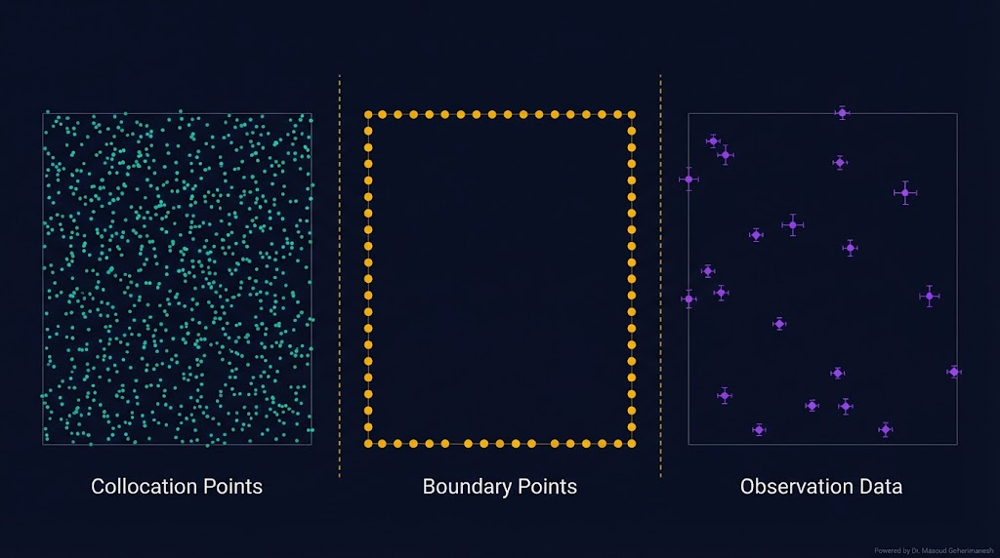
# ============================================ # Cell 4: Physics Loss (PDE Residual) # ============================================ def pde_loss(model, x, t): """محاسبه PDE Residual: u_t - alpha * u_xx""" u = model(x, t) # مشتقات با AutoDiff u_t = torch.autograd.grad( u, t, grad_outputs=torch.ones_like(u), create_graph=True, retain_graph=True )[0] u_x = torch.autograd.grad( u, x, grad_outputs=torch.ones_like(u), create_graph=True, retain_graph=True )[0] u_xx = torch.autograd.grad( u_x, x, grad_outputs=torch.ones_like(u_x), create_graph=True )[0] # Residual: u_t - alpha * u_xx residual = u_t - model.alpha * u_xx return torch.mean(residual**2) # --- تست --- loss_pde = pde_loss(model, x_colloc, t_colloc) print(f'PDE Loss: {loss_pde.item():.6f}') print(f'Learned alpha: {model.alpha.item():.4f}')
create_graph=True استفاده کنید تا gradient بتواند به پارامترها برگردد. بدون این، backprop شکسته میشود.
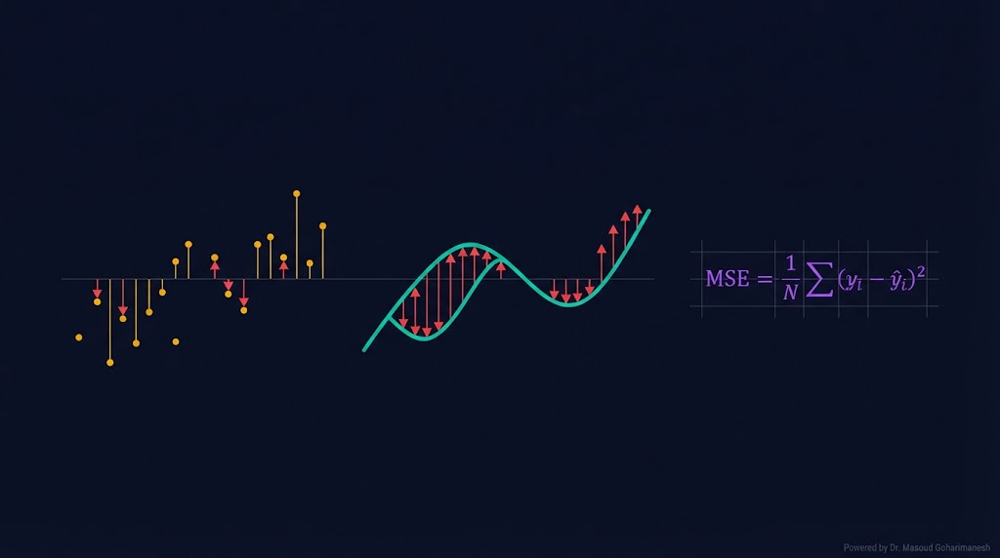
# ============================================ # Cell 5: Data & Boundary Losses # ============================================ def data_loss(model, x_data, t_data, u_data): """Loss دادههای مشاهدهای""" u_pred = model(x_data, t_data) return torch.mean((u_pred - u_data)**2) def bc_loss(model, x_bc_left, x_bc_right, t_bc): """Loss شرایط مرزی: u(0,t) = u(1,t) = 0""" u_left = model(x_bc_left, t_bc) u_right = model(x_bc_right, t_bc) return torch.mean(u_left**2) + torch.mean(u_right**2) def ic_loss(model, x_ic, t_ic): """Loss شرایط اولیه: u(x,0) = sin(pi*x)""" u_pred = model(x_ic, t_ic) u_true = torch.sin(np.pi * x_ic) return torch.mean((u_pred - u_true)**2) # --- تست --- loss_data = data_loss(model, x_data, t_data, u_data) loss_bc = bc_loss(model, x_bc_left, x_bc_right, t_bc) loss_ic = ic_loss(model, x_ic, t_ic) print(f'Data Loss: {loss_data.item():.6f}') print(f'BC Loss: {loss_bc.item():.6f}') print(f'IC Loss: {loss_ic.item():.6f}')
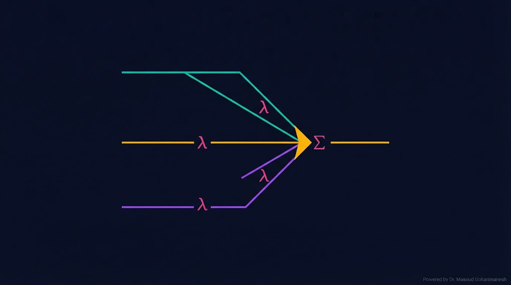
# ============================================ # Cell 6: Total Loss # ============================================ def total_loss(model, cfg): """ترکیب وزندار سه Loss""" # Loss فیزیکی loss_pde = pde_loss(model, x_colloc, t_colloc) # Loss داده loss_data = data_loss(model, x_data, t_data, u_data) # Loss مرزی loss_bc = bc_loss(model, x_bc_left, x_bc_right, t_bc) # Loss اولیه loss_ic = ic_loss(model, x_ic, t_ic) # ترکیب وزندار total = (cfg.w_pde * loss_pde + cfg.w_data * loss_data + cfg.w_bc * loss_bc + cfg.w_ic * loss_ic) return total, { 'pde': loss_pde.item(), 'data': loss_data.item(), 'bc': loss_bc.item(), 'ic': loss_ic.item() } # --- تست --- total, losses = total_loss(model, cfg) print(f'Total Loss: {total.item():.6f}') for k, v in losses.items(): print(f' {k}: {v:.6f}')
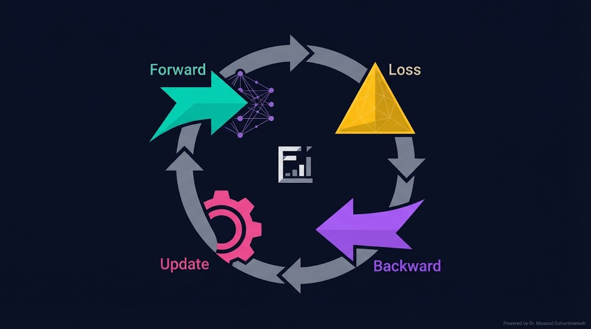
# ============================================ # Cell 7: Training Loop # ============================================ optimizer = optim.Adam(model.parameters(), lr=cfg.lr) scheduler = optim.lr_scheduler.StepLR(optimizer, step_size=2000, gamma=0.5) history = {'loss': [], 'pde': [], 'data': []} start = time.time() for epoch in range(cfg.epochs): model.train() optimizer.zero_grad() total, losses = total_loss(model, cfg) total.backward() optimizer.step() scheduler.step() history['loss'].append(total.item()) history['pde'].append(losses['pde']) history['data'].append(losses['data']) if epoch % 500 == 0: elapsed = time.time() - start print(f'Epoch {epoch:5d} | ' f'Loss: {total.item():.6f} | ' f'PDE: {losses["pde"]:.6f} | ' f'alpha: {model.alpha.item():.4f} | ' f'Time: {elapsed:.1f}s') print(f'\nTraining complete!') print(f'Final alpha: {model.alpha.item():.4f}') print(f'True alpha: {cfg.alpha:.4f}') print(f'Error: {abs(model.alpha.item() - cfg.alpha) / cfg.alpha * 100:.2f}%')
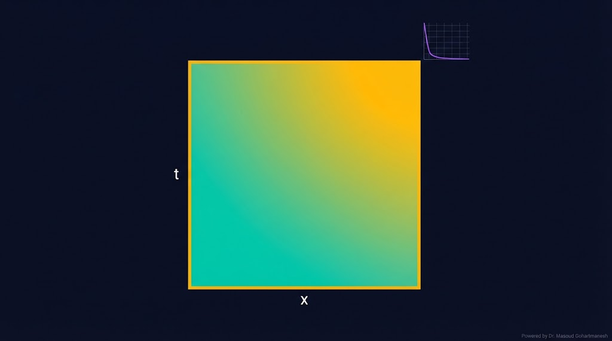
در مسئله مستقیم، **همه پارامترها معلوم** هستند و فقط جواب PDE را میخواهیم. کافیست w_data=0 کنید:
# ============================================ # Cell 8: Forward Problem # ============================================ # --- Config برای Forward --- cfg_fwd = Config() cfg_fwd.w_data = 0.0 # بدون داده cfg_fwd.w_pde = 1.0 cfg_fwd.w_bc = 10.0 cfg_fwd.w_ic = 10.0 cfg_fwd.epochs = 5000 # --- مدل جدید --- model_fwd = PINN(cfg_fwd).to(device) optimizer = optim.Adam(model_fwd.parameters(), lr=cfg_fwd.lr) # --- آموزش --- for epoch in range(cfg_fwd.epochs): optimizer.zero_grad() total, losses = total_loss(model_fwd, cfg_fwd) total.backward() optimizer.step() if epoch % 1000 == 0: print(f'Epoch {epoch}: Loss={total.item():.6f}') # --- ارزیابی --- model_fwd.eval() x_test = torch.linspace(0, 1, 100).reshape(-1, 1).to(device) t_test = torch.full_like(x_test, 0.5) with torch.no_grad(): u_pred = model_fwd._forward(x_test, t_test) if hasattr(model_fwd, '_forward') else model_fwd(x_test, t_test) u_true = true_solution(x_test, t_test, cfg_fwd.alpha) error = torch.mean((u_pred - u_true)**2).item() print(f'\nMSE Error: {error:.6e}')
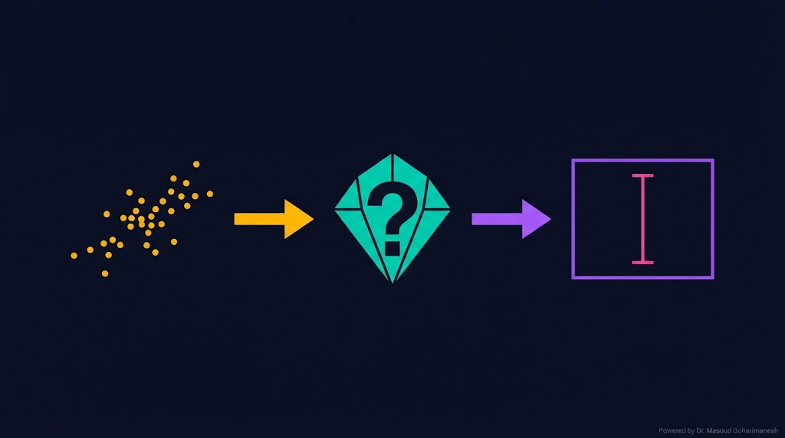
در مسئله معکوس، **پارامترهای PDE نامعلوم** هستند و باید از داده تخمین زده شوند:
# ============================================ # Cell 9: Inverse Problem # ============================================ # --- Config برای Inverse --- cfg_inv = Config() cfg_inv.w_data = 1.0 # داده مهم است cfg_inv.w_pde = 1.0 cfg_inv.w_bc = 10.0 cfg_inv.w_ic = 10.0 cfg_inv.epochs = 10000 # --- مدل جدید --- model_inv = PINN(cfg_inv).to(device) # alpha قابل یادگیری است print(f'Initial alpha: {model_inv.alpha.item():.4f}') print(f'True alpha: {cfg_inv.alpha:.4f}') optimizer = optim.Adam([ {'params': model_inv.net.parameters(), 'lr': 1e-3}, {'params': [model_inv.alpha], 'lr': 1e-2} # نرخ بالاتر ]) # --- آموزش --- alpha_history = [] for epoch in range(cfg_inv.epochs): optimizer.zero_grad() total, losses = total_loss(model_inv, cfg_inv) total.backward() optimizer.step() alpha_history.append(model_inv.alpha.item()) if epoch % 1000 == 0: print(f'Epoch {epoch}: Loss={total.item():.6f}, ' f'alpha={model_inv.alpha.item():.4f}') print(f'\nFinal estimation:') print(f' True alpha: {cfg_inv.alpha:.4f}') print(f' Learned alpha: {model_inv.alpha.item():.4f}') print(f' Error: {abs(model_inv.alpha.item() - cfg_inv.alpha) / cfg_inv.alpha * 100:.2f}%')
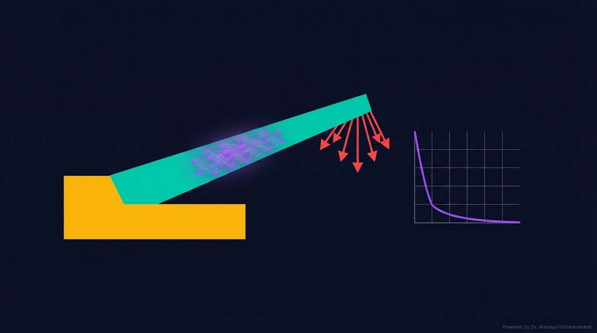
معادله نانو انبرک را با PINN حل میکنیم. برای این کار، PDE مرتبه ۴ را به ۴ معادله مرتبه ۱ تبدیل میکنیم:
# ============================================ # Cell 10: PINN for Nano-cantilever # ============================================ class NanoCantileverPINN(nn.Module): def __init__(self): super().__init__() self.net = nn.Sequential( nn.Linear(1, 64), nn.Tanh(), nn.Linear(64, 64), nn.Tanh(), nn.Linear(64, 64), nn.Tanh(), nn.Linear(64, 1) ) # پارامترهای فیزیکی (قابل تخمین) self.alpha = nn.Parameter(torch.tensor([1.0])) self.beta = nn.Parameter(torch.tensor([0.1])) def forward(self, x): return self.net(x) # --- دامنه: x ∈ [0, L] --- L = 1.0 x_domain = torch.rand(1000, 1, requires_grad=True).to(device) * L x_bc = torch.tensor([[0.0], [L]]).to(device) # --- PDE Residual: EI w'''' = alpha/(1-w)^2 + beta/(1-w)^3 --- def nano_pde_loss(model): w = model(x_domain) # مشتقات مرتبه ۴ w_x = torch.autograd.grad(w, x_domain, grad_outputs=torch.ones_like(w), create_graph=True)[0] w_xx = torch.autograd.grad(w_x, x_domain, grad_outputs=torch.ones_like(w_x), create_graph=True)[0] w_xxx = torch.autograd.grad(w_xx, x_domain, grad_outputs=torch.ones_like(w_xx), create_graph=True)[0] w_xxxx = torch.autograd.grad(w_xxx, x_domain, grad_outputs=torch.ones_like(w_xxx), create_graph=True)[0] # Residual force = (model.alpha / (1 - w)**2 + model.beta / (1 - w)**3) residual = w_xxxx - force return torch.mean(residual**2) # --- آموزش --- model_nano = NanoCantileverPINN().to(device) opt = optim.Adam(model_nano.parameters(), lr=1e-3) for epoch in range(5000): opt.zero_grad() # PDE Loss loss_pde = nano_pde_loss(model_nano) # BC: w(0)=w'(0)=0, w''(L)=w'''(L)=0 w_bc = model_nano(x_bc) loss_bc = torch.mean(w_bc**2) loss = loss_pde + 10 * loss_bc loss.backward() opt.step() if epoch % 1000 == 0: print(f'Epoch {epoch}: Loss={loss.item():.6f}, ' f'alpha={model_nano.alpha.item():.4f}')
اکنون شما ابزارهای لازم را دارید. پروژه نهایی، ترکیب همه اینها است:
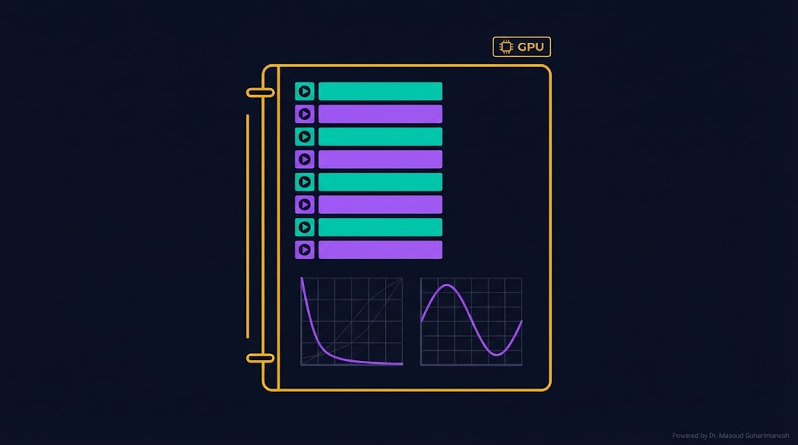
# ============================================ # Complete PINN Notebook (Colab) # ============================================ import torch import torch.nn as nn import torch.optim as optim import numpy as np import matplotlib.pyplot as plt import time device = torch.device('cuda' if torch.cuda.is_available() else 'cpu') torch.manual_seed(42) # --- Config --- class Config: n_input = 2 n_hidden = 64 n_layers = 4 n_output = 1 n_collocation = 5000 n_boundary = 200 n_initial = 200 n_data = 100 lr = 1e-3 epochs = 10000 w_pde = 1.0 w_bc = 10.0 w_ic = 10.0 w_data = 1.0 alpha = 0.01 cfg = Config() # --- Network --- class PINN(nn.Module): def __init__(self, cfg): super().__init__() self.cfg = cfg layers = [nn.Linear(cfg.n_input, cfg.n_hidden), nn.Tanh()] for _ in range(cfg.n_layers - 1): layers += [nn.Linear(cfg.n_hidden, cfg.n_hidden), nn.Tanh()] layers.append(nn.Linear(cfg.n_hidden, cfg.n_output)) self.net = nn.Sequential(*layers) self.alpha = nn.Parameter(torch.tensor([cfg.alpha])) def forward(self, x, t): return self.net(torch.cat([x, t], dim=1)) # --- Data --- x_colloc = torch.rand(cfg.n_collocation, 1, requires_grad=True).to(device) t_colloc = torch.rand(cfg.n_collocation, 1, requires_grad=True).to(device) t_bc = torch.rand(cfg.n_boundary, 1).to(device) x_bc_0 = torch.zeros(cfg.n_boundary, 1).to(device) x_bc_1 = torch.ones(cfg.n_boundary, 1).to(device) x_ic = torch.rand(cfg.n_initial, 1).to(device) t_ic = torch.zeros(cfg.n_initial, 1).to(device) def true_sol(x, t, a): return torch.exp(-a * np.pi**2 * t) * torch.sin(np.pi * x) x_data = torch.rand(cfg.n_data, 1).to(device) t_data = torch.rand(cfg.n_data, 1).to(device) u_data = true_sol(x_data, t_data, cfg.alpha) + 0.01 * torch.randn_like(x_data) # --- Loss --- def compute_loss(model, cfg): # PDE u = model(x_colloc, t_colloc) u_t = torch.autograd.grad(u, t_colloc, torch.ones_like(u), create_graph=True)[0] u_x = torch.autograd.grad(u, x_colloc, torch.ones_like(u), create_graph=True)[0] u_xx = torch.autograd.grad(u_x, x_colloc, torch.ones_like(u_x), create_graph=True)[0] loss_pde = torch.mean((u_t - model.alpha * u_xx)**2) # BC u_bc_0 = model(x_bc_0, t_bc) u_bc_1 = model(x_bc_1, t_bc) loss_bc = torch.mean(u_bc_0**2) + torch.mean(u_bc_1**2) # IC u_ic = model(x_ic, t_ic) loss_ic = torch.mean((u_ic - torch.sin(np.pi * x_ic))**2) # Data u_pred = model(x_data, t_data) loss_data = torch.mean((u_pred - u_data)**2) return (cfg.w_pde * loss_pde + cfg.w_bc * loss_bc + cfg.w_ic * loss_ic + cfg.w_data * loss_data) # --- Training --- model = PINN(cfg).to(device) optimizer = optim.Adam(model.parameters(), lr=cfg.lr) losses = [] for epoch in range(cfg.epochs): optimizer.zero_grad() loss = compute_loss(model, cfg) loss.backward() optimizer.step() losses.append(loss.item()) if epoch % 1000 == 0: print(f'Epoch {epoch}: Loss={loss.item():.6f}, alpha={model.alpha.item():.4f}') # --- Plot --- fig, axes = plt.subplots(1, 2, figsize=(14, 5)) axes[0].semilogy(losses) axes[0].set_xlabel('Epoch') axes[0].set_ylabel('Loss') axes[0].set_title('Training Loss') axes[0].grid(True, alpha=0.3) model.eval() x_test = torch.linspace(0, 1, 100).reshape(-1, 1).to(device) t_test = torch.full_like(x_test, 0.5) with torch.no_grad(): u_pred = model(x_test, t_test).cpu().numpy() u_true = true_sol(x_test, t_test, cfg.alpha).cpu().numpy() axes[1].plot(x_test.cpu().numpy(), u_true, 'k-', lw=2, label='Exact') axes[1].plot(x_test.cpu().numpy(), u_pred, 'r--', lw=2, label='PINN') axes[1].set_xlabel('x') axes[1].set_ylabel('u(x, 0.5)') axes[1].legend() axes[1].grid(True, alpha=0.3) plt.tight_layout() plt.savefig('pinn_result.png', dpi=600, bbox_inches='tight') plt.show() print(f'\nTrue alpha: {cfg.alpha:.4f}') print(f'Learned alpha: {model.alpha.item():.4f}')
create_graph=True در AutoDiff چیست؟ارسال تمرینها:
m.goharimanesh@gmail.com
Subject الزامی:
[Advanced Engineering Mathematics] HW20 - نام و نام خانوادگی - شماره دانشجویی
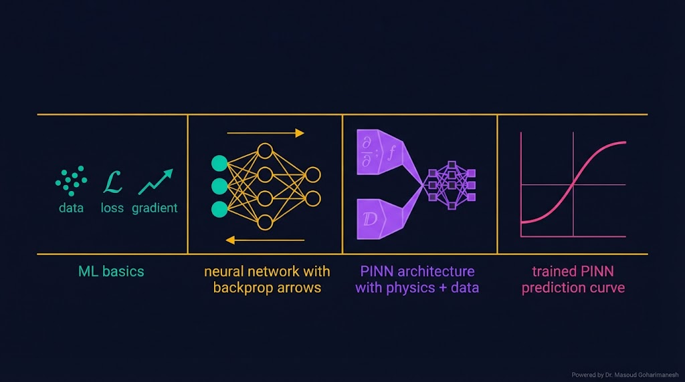
مقدمه ML
Backprop
PINN تئوری
PINN عملی
امروز اولین PINN خود را ساختید — این یک نقطه عطف در یادگیری شما است! 🌟
Loss کل PINN — در یک نوتبوک PyTorch
بهینهسازی بدون قید و Adam
دکتر مسعود گوهری منش
دانشیار گروه مهندسی مکانیک — دانشگاه تربت حیدریه
🇮🇷 با افتخار برای دانشجویان مکاترونیک 🇮🇷
ابوریحان بیرونی (۹۷۳–۱۰۴۸ م) در کتاب «قانون مسعودی» شعاع زمین را با خطای کمتر از ۱٪ محاسبه کرد. روش او مبتنی بر اندازهگیری دقیق و تقریب متوالی بود.
او با استفاده از یک کوه و افق، زاویهی افت را اندازه گرفت و از رابطهی هندسی، شعاع زمین را محاسبه کرد — این روش، هزار سال پیش از ظهور کامپیوتر، بسیار شگفتانگیز است.
فرایند آموزش PINN، بسیار شبیه به روش ابوریحان است:
ابوریحان، در قرن ۱۱ میلادی، همان مسیری را طی کرد که امروز PINN با میلیونها پارامتر و GPU طی میکند: از داده و مدل، به نتیجه دقیق.
این تقارب نشان میدهد که روش علمی، جوهرهای ثابت دارد که در هر عصری با ابزارهای متفاوت ظاهر میشود. از ابوریحان تا PyTorch، همان تلاش برای فهم دقیق طبیعت.